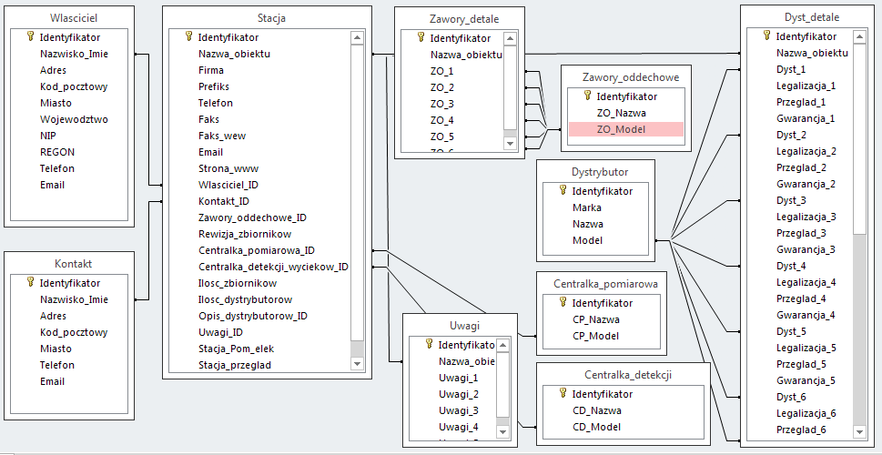
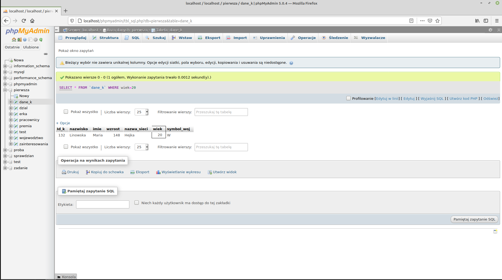

Podczas lekcji nauczysz się zarządzać bazą danych za pomocą programu MS Acces. Poznasz
budowę, oraz nomenklaturę związaną z bazami danych, a także dowiesz się czym jest
relacyjna baza danych. Nauczysz się również tworzyć oraz znajdować zastosowanie dla różnych
relacji w bazach danych.

Poznasz również język SQL oraz za jego pomocą zaczniesz obsługiwać bazy danych. Dowiesz się
też czym jest System Zarządzania Bazą Danych.
